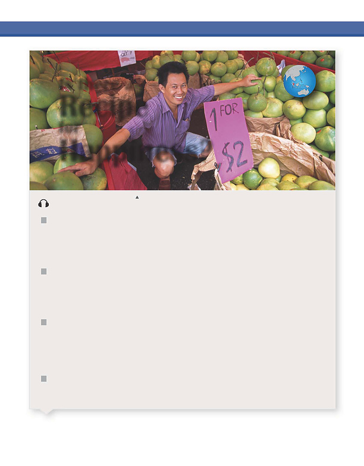

READING
Is
there
a
Recipe
for
Happiness?
track
1-01
Singapore
A
happy
street
seller
shows
off
his
fruit
selection
at
an
open-air
market
in
Singapore.
A
WHAT
MAKES
US
HAPPY?
Money?
Friends?
A
good
job?
Are
the
answers
the
same
for
everyone?
According
to
world
surveys,
Mexico
and
Singapore
are
two
happy
countries—but
their
people
may
be
happy
for
different
reasons.
Safety
and
Security
B
There
are
more
than
19,000
people
per
square
mile
1
in
the
small
nation
of
Singapore.
People
on
the
island
work
an
average
of
70
hours
per
week.
The
country
has
strict
laws,
for
example,
against
littering,
2
graffiti,
3
and
even
for
not
flushing
a
toilet.
But
according
to
the
World
Database
of
Happiness,
Singapore
is
the
happiest
country
in
Asia.
Why?
One
reason
for
Singapore’s
happiness
is
that
the
government
provides
the
basic
necessities,
such
as
jobs
and
housing.
There
is
almost
no
poverty,
and
Singapore
has
one
of
the
lowest
levels
of
unemployment
in
the
world.
The
government
creates
jobs
for
people
who
are
unemployed.
It
“tops
up”
4
poorer
people’s
income
so
everyone
can
have
a
minimum
standard
of
living.
The
government
also
offers
tax
breaks
5
to
people
who
look
after
their
aging
parents.
This
may
be
why
84
percent
of
older
people
live
with
their
children.
The
result
is
a
lot
of
closely
connected
families
with
roughly
equal
standards
of
living.
People
may
not
all
be
happy
about
the
laws,
but
they
are
generally
happy
with
the
results—they
don’t
step
in
litter,
the
public
toilets
work,
and
the
streets
are
safe
and
clean.
So
for
Singaporeans,
it
seems
that
living
in
a
secure,
clean,
and
safe
place
may
be
more
important
than
having
a
lot
of
personal
freedom.
As
Dr.
Tan
Ern
Ser
of
Singapore’s
Institute
of
Policy
Studies
explains,
“If
you
are
hopeful
and
confident
of
getting
what
you
want
in
life,
then
you
are
happy.”
C
D
1
2
A
square
mile
=
2.59
square
kilometers
Littering
is
leaving
garbage
or
trash
lying
around
outside.
3
Graffiti
is
words
or
pictures
that
are
written
or
drawn
on
walls
or
other
public
places.
4
5
If
you
top
something
up,
you
add
to
it
to
make
it
full.
If
the
government
gives
someone
a
tax
break,
it
lowers
the
amount
of
tax
they
have
to
pay.
HAPPINESS
|
5